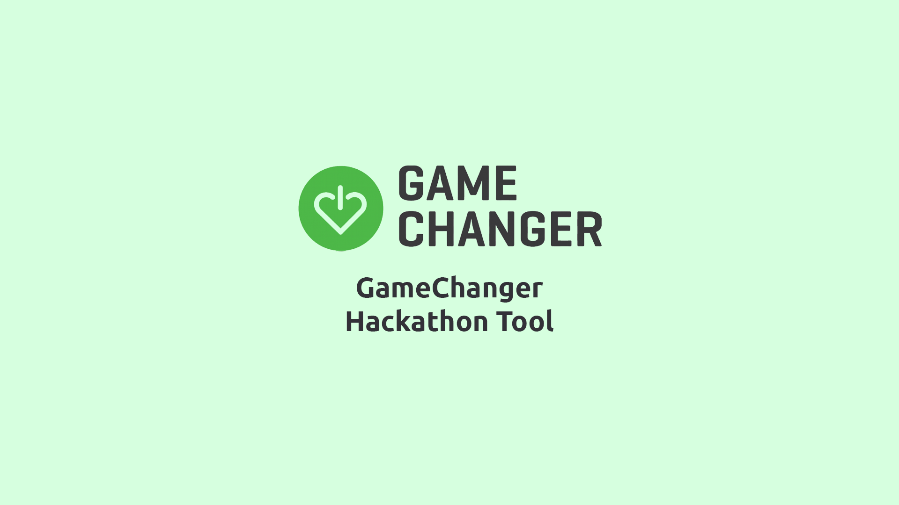

<html lang="en"></html>
<head>
    <meta charset="utf-8">

    <title>Online Portfolio</title>
    <meta name="viewport" content="width=device-width, initial-scale=1.0">
    
    
    <!--Custom Style Sheet-->
    <link rel="stylesheet" href="bootstrap-4.5.0-dist/css/bootstrap.min.css">
    <link rel="stylesheet" href="experiment-3.css">
    <!--Custom Icon-->
    <link rel="icon" href="assets/logo_AAW_icon.ico">
    <!--Custom Text-->
    <link href="https://fonts.googleapis.com/css2?family=Ubuntu:wght@300;400;500;700&display=swap" rel="stylesheet">
    <!--Animate.css-->
    <link
    rel="stylesheet"
    href="https://cdnjs.cloudflare.com/ajax/libs/animate.css/4.0.0/animate.min.css"
  />
    <!--Font Awesome Icons-->
    <link rel="stylesheet" href="fontawesome-free-5.13.0-web/css/all.min.css">
    <!--jQuery and Bootstrap-->
    <script
    src="https://code.jquery.com/jquery-3.5.1.min.js"
    integrity="sha256-9/aliU8dGd2tb6OSsuzixeV4y/faTqgFtohetphbbj0="
    crossorigin="anonymous"></script>
    <script src="bootstrap-4.5.0-dist/js/bootstrap.min.js"></script>
    <!--Custom JavaScript-->
    <script src="experiment-3.js"></script>
</head>
<body id="background-color">
  <div class="bg-pastel-green spaces-in-between">
    
  </div>
  <div class="container-fluid">
    <div class="row">
      <div class="col-md-3"></div>
      <div class="col-md-6 animate__animated animate__fadeInUp">
        <!-- Background information -->
        <div class="smaller-space-in-between">
          <h1 class="green-title name-head">Background</h1>
          <p class="date-text">January 2020 - June 2020</p>
          <p class="write-up-text">
            For my capstone project, five other students and I partnered up with a charity called GameChanger 
            to create a hackathon tool that will be used in DreamHack events. DreamHack, the world's largest
            digital festival for gaming and esports, recently partnered with GameChanger, and our sponsor wanted to host
            hackathons during the event.  
          </p>
          <p class="write-up-text">
            The projects created in our event are meant to better the lives of hospitalized children. 
            In our application, there is an emphasis on storytelling and continuity so that these games carry on an impact beyond
            the hackathon space.  
          </p>
          <p class="write-up-text">
            The project spanned two quarters, which is about six months total of design and development. 
            I worked as a front-end developer, using frameworks like Vue.JS and Vuetify for interface and AWS services, such 
            as DynamoDB and Cognito, for back-end integration.  
          </p>
        </div>
        <div class="d-flex justify-content-center mb-5">
          <a href="index.html" class="color-blue custom-font" id="return-button">Return to main page</a>
        </div>
      </div>
      <div class="col-md-3"></div>
    </div>
</body>